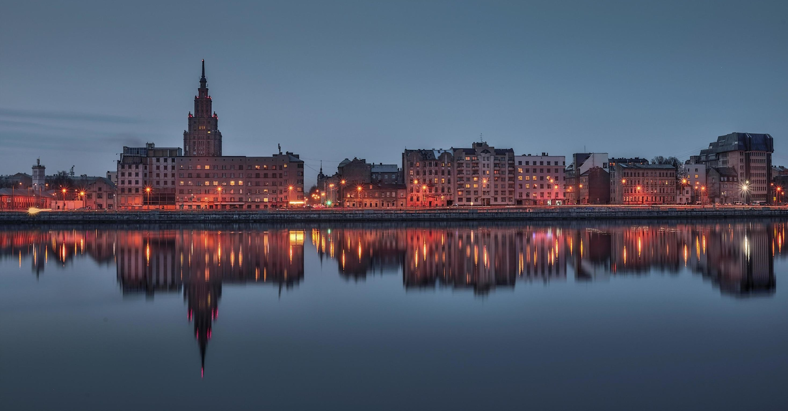

What we Learned
This project was originally intended as a distant reading exercise; however, the need to manually create the dataset led us to engage in close reading throughout the process. This approach allowed us to uncover several important insights into the patterns and strategies involved in street renaming. By closely analyzing the data, we identified distinct temporal trends, specific areas of focus, and decision-making triggers. These findings reveal how historical, political, and cultural factors have influenced the evolution of urban toponymy in Riga.
During the period of Perestroika, we noticed subtle changes in street names, with a few being renamed to honor notable Latvian cultural figures, such as the poet Aspazija. Additionally, some historical names in the Old Town were restored, including Doma laukums, one of the city's main squares. It's important to emphasize that these changes were largely neutral. Doma laukums is a medieval name with deep historical significance, and although Aspazija, who passed away in 1943, was a poet of the national romanticism movement, she was not explicitly anti-Soviet.
Following Latvia’s restoration of independence in 1991, there was a significant wave of street renamings and the restoration of historical names. This process was not explicitly anti-Russian; instead, it was characterized by an anti-Soviet sentiment. Also, streets named after German and Latvian Marxists, for example, as well as Soviet-era communist leaders, were removed or replaced. Notably, streets named after Kyiv and Odesa also underwent renaming, and Brīvības iela was reinstated after having been called Ļeņina iela during the Soviet period. However, the renaming was selective—streets named after Russian, pre-Soviet cultural figures such as Pushkin, Lomonosov, and Gogol remained unchanged, as did Maskavas iela. In some instances, names from the Russian imperial period were restored, such as Elizabetes iela, which was originally named after the wife of Russian Emperor Alexander I. This reflects a complex negotiation between historical memory and national identity.
Following the initial wave of street renamings in the early 1990s, a smaller number of streets were renamed to express political solidarity. Notable examples include Jeruzalemes iela, renamed in 1998 after Latvia established diplomatic relations with Israel in 1992 and following the visit of Latvian President Guntis Ulmanis to Israel. Another example is Džohara Dudajeva gatve, which was renamed in 1996 in honor of Dzhokhar Dudayev, the President of the Chechen Republic of Ichkeria, who was killed that same year. It is important to note that these symbolic gestures were applied to relatively minor streets. Jeruzalemes iela is only 126 meters long and located in the embassy district, while Džohara Dudajeva gatve is situated in a suburban area of the city. This suggests a balance between political messaging and practical considerations in urban planning.
In the initial stages of the Russian war on Ukraine in 2014, there were no street renamings in Riga. However, in response to the full-scale invasion in 2022, the city acted quickly and symbolically. On March 10, 2022, the section of Antonijas iela where the Russian Embassy is located was renamed Ukrainas Neatkarības iela (Ukrainian Independence Street). In the following years, city policy underwent a significant shift toward systematically renaming all streets associated with Russia. This new strategy targeted names that had previously been untouched, including Pushkin, Gogol, and Lomonosov streets, as well as Maskavas iela. The surrounding neighborhood formerly known as the "Moscow District" was rebranded as the "Latgale District."
If we were to continue working on this topic, it would be valuable to explore how the specifically anti-Russia renaming decisions impact the city’s inhabitants. According to official census data from early 2025, 23.4% of Latvia’s population is classified as “Russian.” And in Riga, according to the Official Statistics Portal, ethnic Latvians make up 48.3% of the population in 2025. These statistics raise important questions about identity, inclusion, and how geopolitical tensions are navigated and experienced at the local level within everyday urban spaces.